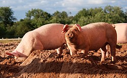

Pig
 Index VGFrom Wikipedia, the free encyclopedia
This article is about the domestic farm animal. For other animals known as "swine", see Suina. For other uses, see Swine (disambiguation) and Pig (disambiguation).
The pig (Sus domesticus) , also called swine (pl.: swine) or hog, is an omnivorous,
domesticated,
even-toed, hoofed mammal.
It is named the domestic pig when distinguishing it from other members of the genus Sus.
Some authorities consider it a subspecies of Sus scrofa (the wild boar or Eurasian boar); other authorities
consider it a distinct species.
Pigs were domesticated independently twice during the Neolithic, in the Near East around the Tigris Basin,
and
in China.
Wild boar
When domesticated pigs arrived in Europe from the Near East, they extensively interbred with wild boar in
Europe
but retained their domesticated features. 
Pigs are farmed primarily for meat, called pork. The animal's skin or hide is used for leather. China is the world's largest pork producer, followed by the European Union and then the United States. Around 1.5 billion pigs are raised each year, producing some 120 million tonnes of meat, often cured as bacon. Some are kept as pets.
Pigs have featured in human culture since Neolithic times, appearing in art and literature for children and adults, and celebrated in cities such as Bologna for their meat products.
Description
The pig has a large head, with a long snout strengthened by a special prenasal bone and a disk of cartilage at the tip.[2] The snout is used to dig into the soil to find food and is an acute sense organ. The dental formula of adult pigs is 3.1.4.3 3.1.4.3 , giving a total of 44 teeth. The rear teeth are adapted for crushing. In males, the canine teeth can form tusks, which grow continuously and are sharpened by grinding against each other.[2] There are four hoofed toes on each foot; the two larger central toes bear most of the weight, while the outer two are also used in soft ground.[3] Most pigs have rather sparsely bristled hair on their skin, though there are some woolly-coated breeds such as the Mangalitsa.[4] Adult pigs generally weigh between 140 and 300 kg (310 and 660 lb), though some breeds can exceed this range. Exceptionally, a pig called Big Bill weighed 1,157 kg (2,551 lb) and had a shoulder height of 1.5 m (4 ft 11 in).[5]
Pigs possess both apocrine and eccrine sweat glands, although the latter are limited to the snout.[6] Pigs, like other "hairless" mammals such as elephants, do not use thermal sweat glands in cooling.[7] Pigs are less able than many other mammals to dissipate heat from wet mucous membranes in the mouth by panting. Their thermoneutral zone is 16–22 °C (61–72 °F).[8] At higher temperatures, pigs lose heat by wallowing in mud or water via evaporative cooling, although it has been suggested that wallowing may serve other functions, such as protection from sunburn, ecto-parasite control, and scent-marking.[9] Pigs are among four mammalian species with mutations in the nicotinic acetylcholine receptor that protect against snake venom. Mongooses, honey badgers, hedgehogs, and pigs all have different modifications to the receptor pocket which prevents α-neurotoxin from binding.[10] Pigs have small lungs for their body size, and are thus more susceptible than other domesticated animals to fatal bronchitis and pneumonia.[11] The genome of the pig has been sequenced; it contains about 22,342 protein-coding genes.[12][13][14]
Evolution
Phylogeny
Domestic pigs are related to other pig species as shown in the cladogram, based on phylogenetic analysis using mitochondrial DNA.[15]
Taxonomy
The pig is most often considered to be a subspecies of the wild boar, which was given the name Sus scrofa by Carl Linnaeus in 1758; following from this, the formal name of the pig is Sus scrofa domesticus.[16][17] However, in 1777, Johann Christian Polycarp Erxleben classified the pig as a separate species from the wild boar. He gave it the name Sus domesticus, still used by some taxonomists.[18] The American Society of Mammalogists considers it a separate species.[19]
Breeds of pigs
- Bantam
- Silkie
- Polish
- Polish
- Easter Egger
- Rhode Island Reds